📅 Newsletter – Février 2026
28 février 2026
Elle est là, la première Newsletter Culturelle de l’année !
Tous les mois, vous retrouverez des bilans culturels complets où je vais essayer d'être un peu critique, je vais tenter d'anlyser ce que j'ai pu consommer.
Je ne sais pas si c'est pour cause du Festival Internationale du Court Métrage de Clermont-Ferrand mais cette première Newsletter Culturelle
est particulièrement chargée & je suis désolée pour toutes les personnes qui auront la gentillesse & qui ressentiront l'intérêt de la lire. J'aime partager
& parler de ce que j'aime — même si je n'ose pas toujours le faire hors Internet, c'est pourquoi j'ai décidé de créer mon compte Instagram @maetalksabout pour
pouvoir créer du contenu autour de la culture & des arts — deux choses essentielles dans ma vie & qui me permettent de tenir & de me lever tous les jours. Alors,
encore un grand merci à celleux qui prendront le temps de consulter — même si ce n'est que partiellement cette Newsletter Culturelle (on va essayer de lui trouver un
nom plus cool à l'avenir).
D'ailleurs, si vous souhaitez plutôt voir les choses que je consomme de façon moins lourde que ces gros pavés, je ne peux que vous inviter
à vous rendre sur un autre site web que j'ai créé : DÉCOUVERTES CULTURELLES, en gros, le principe c'est
de simples polaroïds avec des images & les informations principales à savoir (titre, créateur, thème). Il n'y a pas besoin de cliquer sur les images, cela ne vous mènera à
absolument rien — il n'y aucun texte. Tout est ici. De plus, je tente de le tenir à jour le plus souvent possible mais il est moins précis que cette Newsletter Culturelle car
j'écris sur ce site dès que je sors de quelque chose afin de donner mon avis à chaud.
Sinon — pour cette première introduction, promis les prochaines seront moins longues —
j'en profite pour faire ma publicité mais si vous voulez vous tenir au courant des événements/lieux cools, culturels & artistiques sur Clermont-Fd je vous
invite à consulter régulièrement ma page Instagram @maetalksabout où je fais régulièrement des stories sur toutes les choses
qui se passent dans ma ville de 🤍 (désolée pour mes Nantais 🔰). Sur ce compte, je fais aussi des publications où je vous conseille différentes choses — de vidéos YouTube à des cafés
de bobo parisiens — mais surtout des publications où je me fixe des objectifs pour reprendre au max (s/o HJeune Crack) mes activités culturelles &
ludiques que j'ai delaissé pendant un certain temps.
Alors si vous voulez me suivre dans toutes ces aventures, je vous souhaite la bienvenue dans mon univers & surtout
j'espère pouvoir à l'avenir être assez à l'aise pour passer par différents canaux autre que l'écrit (YouTube, Podcast ou toutes autres choses mais là j'ai pas d'idées).
Aussi, je souhaite organiser différents événements mais je sais que ce n'est pas pour tout de suite... j'ai besoin de volontaires pour pouvoir les mettre en place, mais je rêve
de créer un club de lecture & un ciné-club qui se passeraient dans mon appartement avec des discussions animées sur ce qu'on a pu voir/lire autour
de différentes boissons & gourmandises ☕️ mais ça, je le sais, c'est pas prêt d'arriver.
Bon, j'arrête de parler — ou plutôt d'écrire — promis les introductions prochaines
seront BEAUCOUP moins longues. Ah oui juste je voulais préciser que je ne parle que de choses (surtout dans la catégorie 🥳 ÉVÉNEMENTS auxquelles je me suis rendue — c'est pourquoi vous ne trouverez pas la soirée AFFECTION LONGUE DURÉE TOUT COURT #2).
Je vous souhaite une bonne lecture à toustes en vous souhaitant de belles découvertes culturelles 🤎.
Ah oui & avant de finir cette introduction inarrêtable, je voulais m'excuser pour les différentes fautes que ça soit orthographiques ou syntaxiques & aussi — je ne m'arrête jamais
de m'excuser — pour les différentes incohérences du style des fois je mets les dates en gras puis une autre fois en soulignée, je ne me souviens jamais des codes que je me suis fixée. & aussi pour le fait
que des fois le texte est juste sous les images & que des fois il y ai un espace... pour le coup je n'y suis pas pour grand chose.
🎬 L'ÉVENT DU MOIS — Festival Internationl du Court Métrage de Clermont-Ferrand
— par SAUVE QUI PEUT LE COURT-MÉTRAGE
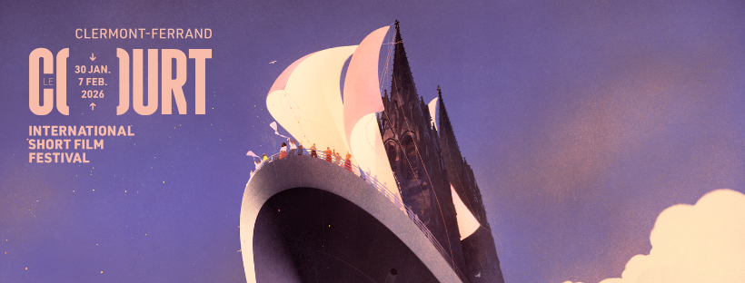
Du 31.01 au 07.02, c'était l'ÉVÉNEMENT de Clermont-Ferrand : le Festival International du Court Métrage de Clermont-Ferrand. Avec mon Service Civique au Lieu-Dit (🤍), j'ai eu un pass d'accréditation all-access pour les séances de court (certaines sont tout de même sur réservation). Je ne vais pas lister tous les courts que j'ai vus, mais je vais vous dire les séances où j'ai été & les courts coup de cœur de celles-ci. Pour des critiques un peu plus complètes avec des petits résumés vous pouvez aller voir en story à la une sur mon Instagram @maetalksabout ! Je n'ai évidemment pas pu voir toutes les séances & même certaines où j'aurais voulu aller... Mais je vous mets le lien du site web du Festival si jamais vous voulez jeter un œuil à la programmation de cette année : site officiel. Même si je sais que le Festival est terminé, vous pouvez peut-être en trouver certains sur des sites de streaming, sur YouTube ou que sais-je..
🎥 LES SÉANCES
🏝️ VAC 4 — FOCUS VACANCES
- HIVER — Jean-Benoît Ugueux (2023)
- MARIE LOUISE — Régis Fortino (2022)
- LES VACANCES — Emmanuelle Bercot (1997)
- RESORT — Emma Birka (2024)
- ALL INCLUSIVE — Corina Schwingruber Iliĉ (2018)
Cette première séance du festival a été un véritable coup de 🤍, je crois que j'aime
beaucoup trop les œuvres qui parlent de vacances, d'été & de ces moments de liberté (Aftersun, Été 85 ou encore Falcon Lake,).
Alors ce focus, cette année, sur le thèmes des vacances me ravit. Ça a été, pour moi, une séance exeptionnelle, j'ai aimé ABSOLUMENT tous les courts visionnés.
Même si par conviction personnelle & surtout politique, celle sur les croisières en paquebot m'a mise en colère — j'ai bien compris que le but de la réalisatrice était de dénoncer cet aspect du sur-tourisme.
Mon gros coup de 🤍 a été pour RESORT de Emma Birka, une histoire "d'amour" entre un employé d'hôtel & une touriste en Tunisie. J'ai trouvé les plans magnifiques & surtout j'y ai vu une certaine poésie.
Selon moi, c'est vraiment une représentation des vacances, des découvertes & des rencontres imprévues. Pour moi c'est une note de 🤎🤎🤎🤎🤎/5 (donc le maximum).
On s'est même fait un pettit plaisir à la fin de cette séance avec un moment food, je vous laisse aller voir juste ici 🌯.
🌏 ASE 4 — FOCUS Asie du Sud-Est
- AILOI TIMES — Nice Aunties (2025)
- STAY AWAKE, BE READY — An Pham Thien (2019)
- LLAGI SENANG JAGA SEKANDANG LEMBU — Amanda Nell Eu (2017)
- CROSS MY HEART AND HOPE TO DIE — Sam Manacsa (2023)
- WASHHH — Mickey Lai (2024)
- THE LIVING NEED LIGHT THE DEAD NEED MUSIC — Tuan Andrew Nguyen, Phunam Ha & Matt Lucero (2015)
Que dire de cette séance... Je me suis levée très tôt ce matin là, je n'avais pas du tout prévu d'y aller mais je me suis dit quitte à être debout autant en profiter pour faire la première séance de la journée sachant que la Comédie est vraiment à cinq minutes de chez moi. Je suis arrivée cinq minutes avant le début de la séancde (aucune idée de ce que j'ai bien pu faire entre 7h30 & 9h30 mais bref). En tout cas — contrairement à la séance POLAR du samedi 31/01 où je n'avais pas pu rentrer même en arrivant une heure à l'avance, j'ai pu accéder à la salle. Cependant, j'ai été (très) déçue par cette séance. AUCUN des courts présentés ne m'a plu. C'est bête moi qui aime le cinéma asiatique — ou qui essaie en tout cas de plus en plus de s'y intéresser (il y en a marre du cinéma nord-américain & européen). Mais là, impossible de comprendre quoi que ce soit de ce qui se passait à l'écran. Déjà, ça commence par un court d'une minute sur un ail géant qui danse. Ça m'a bien fait marrer, mais bon à part ça... Le reste des courts duraient environ 20 minutes. Je ne peux pas enlever le fait que c'était extrêmement bien filmé, y en a aucun où je me suis dit "ah c'est pas bien fait". Mais les scénarios m'ont perdus. Je sais que le cinéma est un art d'abord visuel et comme dit auparavant je ne remets absolument pas en question le travail de réalisation porté sur ces courts, seulement je n'ai juste rien compris & je trouve ça dommage pour un art qui est censé raconter quelque chose de perdre son auditoire. J'ai cru comprendre à la sortie de la salle que l'avis général était le même que le mien. Certaines personnes sont même parties avant la fin de la séance. Seulement 🤎/5 pour cette séance.
🪐 I 11 — Sélection Internationale
- ASTRONAUTA — Giorgio Giampà (2025)
- UNAVAIBLE — Kyrylo Zemlyanyi (2025)
- BROKEN DAWN — Hae-Oh Park (2025)
- CE QU'ON LAISSE DERRIÈRE — Alexandra Myotte & Jean-Sébastien Hamel (2025)
- MANGO SEED — Bernie Jiang (2024)
- DISC — Black Winston Rice (2025)
Une excellente sélection internationale, j'ai vraiment apprécié passer du temps dans cette
salle de cinéma, de toute manière j'aime être au Capitole, c'est sûrement mon cinéma préféré de Clermont-Ferrand. C'était juste un petit moment de divagation.
Reprenons sur la séance, j'ai été séduite par toutes les propositions. Surtout qu'on avait absolument tous les continents de représentés (si je ne me trompe pas) & c'est quelque chose
de très intéressant de pouvoir voir à suivre différents types de cinéma en fonction des cultures du pays.
Mon coeur de 🤍 s'est porté sur un film de Corée Du Sud : BROKEN DAWN.
Même si ce n'était peut-être pas la réalisation la plus poussée techniquement parlant — mais vu ma connaissance dans le domaine de réalisation, je ne pense pas avoir grand chose à dire —
j'ai ADORÉ l'histoire de cette pauvre dame qui a juste besoin de parler à quelqu'un. C'est touchant, beau, émouvant & il n'y aurait pas assez d'adjectifs pour décrire ce que
j'ai pu ressentir en regardant ce court. Pour moi, c'est un bon 🤎🤎🤎🤎/5.
Je conseille vraiment cette séance du Festival qui m'a fait voyager et qui m'a énormément ému
par toutes les histoires racontées. Puis, juste pour l'hilarant court de fin DISC qui m'a fait énormément rire mais qui m'a quand même fait dire "qu'est que je fous là ?".
Bref, c'était juste trop bien.
🪐 I 7 - Sélection Internationale
- ZIZOU — Khaled Moeit (2025)
- CASI SEPTIEMBRE — Lucía G. Romero (2025)
- TURISTI — Mária Kralovič (2025)
- AŞK VE DIĞERLERI — Berna Sitera Değirmen (2025)
- WE WERE HERE — Pranav Bhasin (2025)
Encore une très bonne séance internationale, la sélection était vraiment parfaite — il n'y a pas un film qui ne m'a pas plu.
Encore une fois, voir des films de pays très différents est vraiment quelque chose d'enrichissant. Il y avait un court d'animation TURISTI
à l'animation très particulière & à l'histoire toute aussi étrange mais étonnament j'ai beaucoup apprécié & surtout j'ai pas mal pouffé de rire même si le sujet
n'était pas forcément joyeux. Le thème du dernier court-métrage WE WERE HERE me faisait un peu peur car le synopsis du site web annonçait
une histoire sur les IA & les nouvelles technologies, quelque chose que je trouve souvent très mal-traité, moralisateur (attention, je suis contre les IA dans le monde de l'art) &
surtout fait par des personnes qui n'y connaissent pas grand-chose. Cependant, ce format un docu-fiction a été un réel plaisir à voir, c'était surtout hilarant.
Mon coup de 🤍 va à CASI SEPTIEMBRE, un film d'origine espagnol totalement queer qui raconte la rencontre de deux femmes en soirée, une qui habite à l'année dans un camping
& l'autre qui y passe seulement ses vacances. Cette rencontre qui ne pourra jamais mener à rien m'a énormément touchée. C'est un film qui aurait eu parfaitement sa place dans
le focus VACANCES tellement on ressent ce sentiment d'amour impossible & éphémère. Je lui mets clairement la note de 🤎🤎🤎🤎🤎/5. Je sais bien qu'à l'heure
où vous lirez cette newsletter culturelle le Festival sera déjà passé, vous ne pourrez pas le voir en salle & je trouve ça bien dommage mais il est disponible sur ARTE (la plateforme du peuple si on me demande).
Je vous mets le lien cliquable juste ici : QUASI SEPTIEMBRE.
🧑🧒🧒 KIDS 11+ - Séance Jeunesse
- UN COMBATTANT — Aurélien Richard (2025)
- ATOMIK TOUR — Bruno Collet (2025)
- ELITEN — Lovisa Dröfn (2025)
- OSTRICH — Marie Kenov (2025)
- FORT COMME UN LION — Nathan Villanneau (2025)
- LE JOUR OÙ J'AI LÉCHÉ UN CAILLOU — Goli Atefi, Marie Pijollet, Nathan Jauze, Maud Kolasa, Chloé Bernuchon & Flavie Eliézer (2025)
- PRECIOUS FANTASY — Nino Bouhnik (2025)
- IL EST UNE FOIS - BARBE BLEUE, LE QUÉBÉCOIS MAUDIT — Patrick Volve (2025)
Je crois bien que j'en avais besoin — de cette séance jeunesse — effectivement après avoir visionné un nombre de films plutôt durs
émotivement parlant, j'avais besoin d'un peu plus de légerté & de douceur — même si finalement ce n'a pas été forcément le cas. En tout cas, j'ai adoré cette
séance, un peu de mal avec certains publics mais ce sont des jeunes, on ne peut pas leur en vouloir d'être sur leur téléphone à zapper TikTok — même si j'aurais souhaité tout de même
un peu plus de discrétion. Mais ce n'est qu'un détail dans une moment quasiment parfait en tout point. Il n'y a qu'un seul court que je n'ai pas aimé, c'est le premier : UN COMBATTANT,
je ne vais pas mentir, je n'au pas compris l'intérêt & ce qu'on voulait nous montrer. Si le but c'était simplement de montrer la pratique du karaté alors c'est réussi mais sinon je ne sais pas...
j'ai vraiment eu du mal à comprendre l'intérêt. Je ne veux surtout pas critiquer le travail de l'équipe ayant travaillé sur ce court, je déteste descendre les œuvres que je n'apprécie pas. En plus,
la réalisation était vraiment très bonne : une belle image & un effet de flou lors des combats qui marchait très bien.
J'aurai du mal à dire quel court a été mon favori, j'ai vraiment aimé la plupart d'entre eux. Au niveau
des films d'animation je les ai tous trouvé excellement bien produits & réalisés alors que ce n'était jamais le même style de dessin ou de modélisation. Si je devais en choisir un, pas pour son histoire, mais pour l'originalité
de sa direction artistique je dirai ATOMIK TOUR, si j'ai bien compris c'était plus un trvail de marionnettiste que de dessin mais c'est ce qui a dû me plaire.
Je ne crois pas pouvoir élire un coup de 🤍 pour cette sélection, je les ai tous trouvé — globalement — intéressants, chouettes & prenants. Je n'ai même pas vu une seule fois
les 2 heures passer. D'ailleurs, petite anecdote personnelle le court ELITEN m'a beaucoup fait penser à moi & à ma façon de réflechir à la réussite. De plus, je me suis renseignée vis-à-vis du court IL EST UNE FOIS - BARBE BLEUE, LE QUÉBÉCOIS MAUDIT, il est issu d'une série
télévisée où de nombreux contes sont revisités donc si ça vous intéresse c'est disponible sur Canal+ : lien vers la série.
Moi qui aime tout ce qui est visé pour la jeunesse (romans, bandes dessinées, films & séries d'animation),
je ne pouvais pas ne pas aimer ces découvertes cinématographiques. La séance KIDS 11+ est celle qui vise le public le plus agé au niveau de la jeunesse, je pense aller en voir d'autres pour encore plus jeunes. Par exemple,
celle pour les plus petits KIDS 3+ me tente énormément. Vous verrez à la suite de cette Newsletter Culturelle si j'ai franchi le cap ou non. En tout cas, pour cette séance je mets la note de 🤎🤎🤎🤎/5.
🔪 Séance POLAR
- SPEED QUEEN 51 — Sarah Nocquet (2024)
- AVEC L'HUMANITÉ QUI CONVIENT — Kacper Checinski (2023)
- THE LAST FERRY FROM GRASS ISLAND — Linhan Zhang (2019)
- DARK_NET — Tom Marshall (2015)
- JUST A GUY — Shoko Hara (2020)
- GIFT — Xiaotong Jiang (2023)
Après deux essais infructeux, nous avons ENFIN pu voir cette séance — sûrement celle que j'attendais le plus, j'aime trop les histoires un peu thriller.
Pourtant, ce n'est pas forcément ce qui nous a été proposé à l'écran. On a eu le droit à toutes les émotions : tension, sensation d'être mal à l'aise mais surtout beaucoup d'humour. Je ne m'attendais pas
du tout à que ça soit aussi drôle, mais qu'est que j'ai rigolé — particulièrement devant DARK_NET, vraiment merci pour tout. C'était une séance incroyable avec des
propositions de mise en scène particulièrement ingénieuse, une photographie & une colorimétire de haute qualié pour absolument tous les films sélectionés. Il y a un seul court qui ne m'a pas convaincu c'est
THE LAST FERRY FROM GRASS ISLAND, je n'ai pas trop compris l'histoire & avec mon copain nous n'avons pas du tout le même intérprétation (enfin personnellement j'en ai aucune, étant donné que je
n'ai rien capté).
J'ai eu du mal à choisir lequel était mon préfré, j'ai un gros coup de 🤍 pour le tension palpable dans AVEC L'HUMANITÉ QUI CONVIENT, j'ai trouvé que c'était une histoire
touchante, alarmante & qui doit être le quotidien/combat de beaucoup de personnes en situation de précarité. Cependant, comment ne pas citer GIFT dans mes 🤍 ??? J'ai tellement ri de ces personages
patéhtiques & surtout cette discussion dans la voiture qui est peut-être à mes yeux une des plus bien pensées & drôles que j'ai pu voir au cinéma.
Comme je l'ai dit un peu plus tôt, je ne m'attendais vraiment pas
à ça. Je pensais qu'on serait plus sur une séance somnbre & un peu angoissante — même si JUST A GUY traite d'un sujet difficile à aboder & qui par ses animations m'a réellement mis mal à l'aise (même si je sais que c'est complétement le but).
Bref, tout ça pour dire que c'était une excellene surprise, que je ne peux que conseiller — essayez de trouver les films en streaming légal ou alors totalment illégal 😙 - & vraiment je ne peux que vous conseiller
le dernier de la liste si vous aimez le cinéma chinois. Pour cette séance, je mets la fabuleuse note de 🤎🤎🤎🤎&demi/5 !
🎬 CLAP DE FIN SUR LES COURTS (hors expositions)
Ce Festival International du Court Métrage de Clermont-Ferrand se termine pour nous. Il va falloir passer à autre chose même si passer mes journées dans les salles obscures va me manquer,
il faut bien que tout s'arrête un jour. Finie l'effervescence dans les rues de notre ville, plus de Food Trucks avec des supers plats de bavettes au niveau des Salins, moins de monde devant l'Univers & les affiches
de ce bateau vont disparaître des devantures des boutiques... Mais c'est comme ça, le Festival reviendra plus fort en 2027. Je ne suis pas triste, j'aurais juste voulu voir plus de séances, faire plus de contenus & les diversifier... Au total,
j'ai fait six séances. Un peu déçue tout de même d'avoir raté la Trigger Warning qui avait l'air juste exceptionnelle, de ne pas avoir pris le temps d'aller voir une Sélection Nationale ou encore une Séance Labo,
je n'ai pas vu la KIDS 3+ & au moment où je vous écrits ces mots je m'en veux encore car on devait aller voir la Séance Plan Rapproché, nous n'avons pas pu nous y rendre seulement parce que ne j'ai pas vu l'heure passée & que du coup nous étions
beaucoup trop en retard pour y aller... Je n'ai pas pu faire tous les séances & de toute façon je ne crois pas que ça soit possible. J'essaie de n'avoir aucun regret, j'ai au moins vu celle que je voulais plus voir, la POLAR & qui ne m'a
pas du tout déçue. C'est la première fois que je participe aussi activement au Festival & cela a été très thérapeutique pour moi (d'habitue je me plains de ma maladie seulement sur @maetalksabout mais qui m'en empêche finalement). Non en vrai
je ne vais pas m'étaler sur le sujet, juste pour vous dire que cette semaine a été un moment qui m'a fait du bien & qui a réussi à me faire sortir de chez moi — même si c'était seulement pour deux petites heures.
Merci à SAUVE QUI PEUT LE COURT-METRAGE qui
organise depuis maintenant 48 ans (!!!) ce momen festif qui fait briller Clermont-Fd à l'international. J'ai appris de mes erreurs & maintenant je sais que pour les séances spéciales il me faudra avoir un livre dans mon sac pour attendre deux
heures dans la file d'attente — et tellement les séances ont été un plaisir incommensurables, je me sens prête à le faire (enfin ça dépendra encore de mon état de santé, cette année même une heure d'attente debout ce n'était pas simple). Je veux remercier
toutes les personnes qui ont permis à ce Festival d'avoir lieu & surtout un grand merci aux bénévoles 🤍 qui ont toujours fait un travail incroyable avec le sourire malgré quelques petits désagréments. Je n'en retiens que du positif de cette édition 2026 🤎🤎🤎🤎🤎.
🖼️ EXPOSITIONS
🎨 « LE RÈGNE DES IMAGES » — FRAC Auvergne
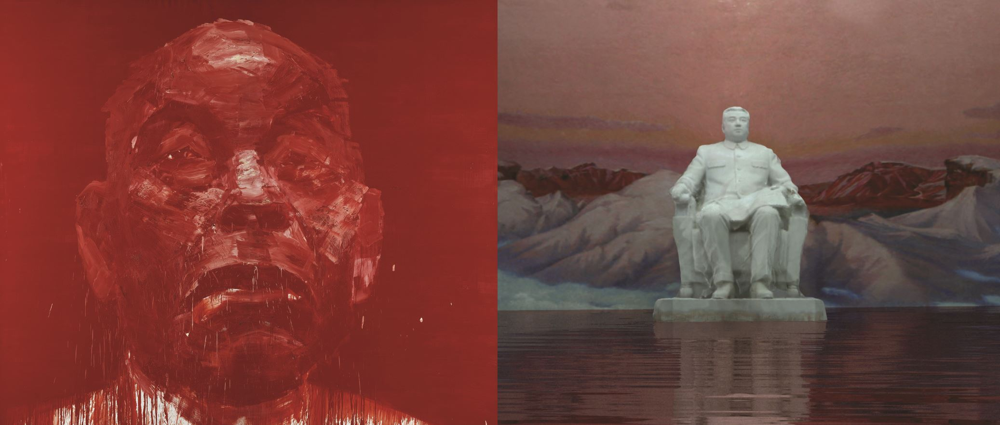
- The Dreadful Details — Éric BAUDELAIRE (2006)
- Landscape with pool — Edi HILA (2000)
- Random Audience — Șerban SAVU (2014)
- Hétérotopie #PEBBI — Vincent J. STOKER (2010)
- L’homme le plus puissant — YAN Pei-Ming(1996)
J'aime les expositions — même si à mon goût je n'en fais pas assez - en janvier je suis allée voir à l'Hôtel Fontfreyde l'exposition Willy RONIS : La Photographie, c'est l'émotion (une fois en visite seule & une fois en guidée),
sinon je suis aussi été au FRAC Auvergne voir l'exposition Habiter le chaos — Joahnna MIRABEL, celle-ci je l'ai vu trois fois (une fois seule, une fois avec mon copain & l'autre fois en visite-guidée). Ça a réellement été des expériences très enrichissantes.
J'ai appris plein de nouvelles choses, de nouvelles références & surtout ça m'a donné encore plus envie de m'intéresser à l'art dans sa globalité (moi qui n'aime de base que Edward Hopper, Basquiat ou encore Keith Haring).
Je me suis découverte une vraie passion pour les visites guidées, j'aime qu'on m'explique ce que je n'arrive pas toujours à percevoir & puis j'aime les petits groupes où on peut échanger avec les autres & la personne
en charge de la médiation.
Ainsi, je me suis rendue un samedi à 15 heures, en compagnie de mon copain où on a croisé une copine au FRAC Auvergne voir la mini-exposition en lien avec le Festival International du Court-Métrage de Clermont-Ferrand.
Cette exposition était vraiment éphemère, elle n'a été visible seulement du 29.01.2026 au 08.02.2026. Le pire — j'extrapole — c'est que c'est la dernière exposition du lieu avant son déménagement à l'ancienne École des Beaux-Arts qui ne réouvrira pas avant le printemps 2026.
Je suis dégoûtée en grande partie parce que j'ai l'impression de ne pas avoir assez profité de ce lieu d'art & je regrette sincèrement de ne pas m'y être intéresséee plutôt où j'aurais essayé de voir toutes les expositions pour découvrir de nouveaux artistes contemporains.
Bref, ce n'est pas grave, je me rattraperai lors de l'ouverture du nouvel espace.
En tout cas, nous sommes ici pour parler de l'exposition LE RÈGNE DES IMAGES, un exposition qui mélangeait des peintures, des photographies & évidemment des courts-métrages en lien
avec les œuvres exposées. Selon le site du FRAC Auvergne, cette exposition interrogeait la place de l'image dans la violence & le pouvoir. Moi, j'y ai vu plutôt une exposition sur les régimes totalitaires — qui finalement est bien décrite par la présentation du site Internet.
La visité a duré une trentaine de minutes avec une excellente médiatrice qui a pris le temps de nous expliquer chaque œuvres & le résumé de la réalisation de chaque court-métrage et du lien avec les œuvres qui étaient pour la plupart dans la collection de l'institution.
Il y avait dans cette exposition cinq œuvres et trois courts-métrages. J'ai aimé chaque œuvre — peut-être moins celle de l'artiste YAN Pei-Ming nommée L'HOMME LE PLUS PUISSANT qui rentre dans un ensmble de portrait dans un énorme format sur son père.
La médiatrice a fait un rapprochement au régime dictatorial de Mao Zedong (par principe politique je ne vais pas mettre son nom en gras) mais j'ai pas réussi à y voir une connexion. C'est pourquoi j'ai moins accrochée à celle-ci — qui cependant par sa dimension reste très impressionnane & par la proposition artistique.
En revanche, j'ai eu un coup de 🤍 pour la photographie complétement mise en scène de Éric BAUDELAIRE nommée The Dreadful Details. Le travail monstre de théatralisation a dû être très prenant & vraiment j'ai trouvé cette œuvre sur la guerre en Irak (2003 — 2011) vraiment
prenante. Nous nous sommes pas arrêtés voir les courts-métrages car même si les sujets semblaient intéressants, les procédés de réalisation expliqués par la médiatrice ne nous a pas vraiment convaincu & nous a pas donné envie de les voir.
Réel coup de 🤍 pour ce moment d'art contemporain, je vais essayer de me renseigner sur ces différents artistes & la prochaine fois que j'irai à une visite guidée, je ferai comme une dame, je prendrai un petit carnet où je pourrais noter mes impressions & surtout
les références citées durant ce guidage. J'ai vraiment hâte de la nouvelle exposition à l'Hôtel Fontfreyde qui se nommera Néo-Analog : une seconde vie pour l’analogique et qui débutera le 24.02.2026, selon la médatrice de l'exposition sur Willy RONIS, ça sera une
exposition assez différentes des autres mélangeant photograpies & arts plastiques. Je ne sais pas à quoi m'attendre mais je pense faire une visite seule puis une guidée : pour chaque exposition, une visite commentée gratuite est organisée le 1er mercredi et le 1er samedi du mois, à 16h & souvent des activités annexes sont proposées
donc à voir ce qui peut m'intéresser.
Bref, je divague un peu de l'exposition de base mais tout ça pour dire qu'elle était vraiment incroyable et encore merci à la médiatrice qui a pris le temps de répondre à mes interrogations. Je suis désolée car pour le moment je ne parle que
de choses qui ne seront plus disponbile lorsque cette Newsletter Culturelle sortira... En tout cas, n'hésitez pas à vous renseigner sur les différentes expositions & surtout — si ça peut vous aider à mieux apprécier — aux visites guidées. Ma prochaine exposition sera sûrement une qui est aussi dans le
cadre du Festival International du Court-Métrage de Clermont-Ferrand à la Salle Gilbert-Gaillard qui se nomme Anatomie du Labo #18, on ira sûrement avec une copine, peut-être en mars car elle reste du 30.01.206 - 07.03.2026, sachant qu'en temps normal ils
font des visites guidées tous les 1er samedi du mois à 15 heure... et que le 07.03.2026 c'est le 1er samedi du mois, alors avec un petit peu de chance je pourrais faire cette exposition avec une visite guidée
qui m'expliquera tout. Nous verrons donc ça dans la Newsletter Culturelle du mois de mars, mais si vous avez le temps, n'hésitez pas à vous y rendre. Bon, à la sortie de cet article il restera peu de temps.
J'ai encore bien divagué mais c'est tellement une nouvelle passion qui me fait énormément de bien que
je n'arrive pas à m'arrêter d'en parler. Juste pour conclure sur l'exposition du FRAC Auvergne, c'était vraiment vraiment — j'insiste — bien. Toustes les médiateur.ice.x.s y sont vraiment agréables, à l'écoute & surtout motivé.e.x.s par leur travail. C'est un vrai coup de 🤍 pour moi, je lui mets la note maximale de 🤎🤎🤎🤎🤎/5 !
Je ne peux que vous inviter à vous renseigner sur toutes les expositions et artistes que j'ai cité auparavant (même sur mes peintres préférés comme je l'ai dit au tout début : vraiment GAS d'Edward Hopper je me remets à pleurer si je la revois en vrai 🥲).
🎦 CINÉMA/SÉRIE
🎤 LE MONDE DE DEMAIN
— Hélier Cisterne & Katell Quillévéré (2022) ; série
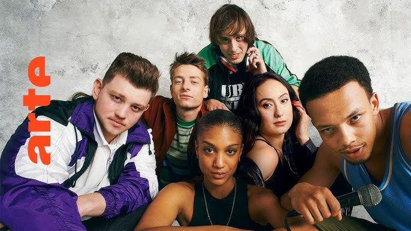
De mon côté c'est un 🔄, je l'avais déjà vu à sa sortie. Mais mon copain ne connaissait pas vraiment
l'histoire du groupe SUPRÊME NTM alors je me suis dit que ça serait une bonne idée de lui montrer.
& j'ai bien fait car ça lui a beaucoup plû & il a pu en apprendre plus sur l'histoire de la création du mouvement Hip-Hop en France
et surtout l'importance du DJ Dee Nasty qui après un voyage aux États-Unis est tombé totalement amoureux de cette culture.
LE MONDE DE DEMAIN racontre vraiment les prémices du groupe. Effectivement pendant les trois premiers épisodes (il y en a six),
on ne parle pas beaucoup de rap & quand il est cité c'est surtout pour se moquer de ceux qui en font — car pour eux c'est que pour les Américains.
On débute avec la découverte de la danse Hip-Hop sur la place du Trocadéro puis sur l'apprentissage du tag. La musique vient après, lors du premier concert
du groupe
📝 RÉFÉRENCES SUPPLÉMENTAIRES
- 🎞️ Documentaire : DJ Mehdi : Made In France — Thibaut de Longeville (2024) : aucun lien, à part cité de temps en temps, mais aussi sur les débuts de groupes iconiques de la scène française & surtout sur l'importance mondial de ce grand homme pour la musique à l'international.
- 📖 Livre/essai : Regarde ta jeunesse dans les yeux — Vincent Piolet (2015) : exploration des prémices de cette sous-culture des années 80/90. Pas des plus facile à lire par son nombre de références mais super enrichissant pour toute personne intéréssée par le monde du Hip-Hop.
🎭 HAMNET
— Chloé ZAHO (2025 — USA) / tiré du livre HAMNET — Maggie O'Farrel (2020) ; film
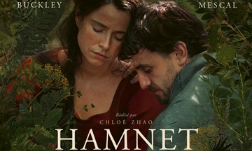
J'ai fait le résumé de LE MONDE DE DEMAIN seule, parce que je connaissais bien la série mais à partir
de maintenant les résumés des œuvres étudiées & citées ici seront pris d'Internet — car je suis vraiment complétement nulle pour expliquer quelque chose.
Donc, passons maintenant au résumé très rapide du film HAMNET — Chloé ZAHO (2026).
Angleterre, 1580. Un professeur de latin fauché fait la connaissance d'Agnès, jeune femme à l'esprit libre. Fascinés l'un par l'autre, ils entament une liaison fougueuse avant de se marier et d'avoir trois enfants. Tandis que Will tente sa chance comme dramaturge à Londres, Agnes assume seule les tâches domestiques. Lorsqu'un drame se produit, le couple, autrefois profondément uni, vacille.
Mais c'est de leur épreuve commune que naîtra l'inspiration d'un chef-d'œuvre universel.
Je n'ai pas bien saisi dans quel sens l'œuvre de William Shakespeare était liée à ce film.
Selon les articles que j'ai pu lire le chef d'oeuvre théâtral HAMLET est en fait inspiré de la réelle tragédie qu'il (le dramaturge) a vécu en août 1596, je ne vous spoil pas ce drame car il y est abordé dans les différentes
œuvres mais je ne sais pas trop comment expliquer ma pensée, peut-être parce que je n'ai pas lu le livre, tout cela me semble flou, qu'est qui a inspiré qui & qui a inspiré quoi ? Bref, beaucoup trop de questionnement inutiles. Il suffit juste que je me renseigne un
peu plus & que je regardes des inteviews. Je pense que pour le coup & sans vouloir me discribiliser ou quoi, c'est seulement moi qui ne veut pas comprendre. NB : j'avais écrit ça & fais mes recherches avant de voir le film,
du coup j'ai compris le traitement de l'œuvre — c'est comment la vie de William Shakespeare a inspiré son œuvre iconique qu'est la pièce HAMELET.
Passons donc maintenant à mon avis — ce qui est censé vous intéresser le plus (même si je doute que quelqu'un soit arrvé jusqu'à ici) — bon, je n'ai pas vu beaucoup de films depuis le début 2026, même très peu, mais je crois avoir déjà trouvé mon préféré de l'année...
J'exagère sûrement un peu — parce que 2026 vient de commencer — mais j'ai tellement apprécié ce film, d'habitude — même les films que j'adore — je vois la longueur du film passer, là sur
deux heures de film j'ai cru qu'il y avait seulement une seule qui s'était déroulée. Le jeu d'acteur est incroyable ; de toute façon je suis folle de Paul Mescal. La réalisation est aux petit onions comme on dit, l'équipe
photo du film a juste trop géré. MAIS, parlons d'un autre sujet : l'émotion transmise pendant ce film. Je suis certes quelqu'un de plutôt émotive mais par contre très peu empathique — j'ai un peu de mal à me mettre à la place des gens (mais je travaille ÉNORMÉMENT dessus).
Je ne sais pas quel procédé ils ont utilisé pour me faire ressentir ce sentiment pour cette famille, alors que je savais déjà en avance — par mes propres recherches sur différents médias ; je ne regarde jamais les bandes-annonces — la tragédie qui allait se produire. & POURTANT qu'est que j'ai pleuré.
Je ne pense pas que ça soit un film dur à regarder émotionnellement parlant mais pour moi il l'a été — j'ai tellement fondu en larmes que toute la salle a dû m'entendre.
On en a beaucoup discuté avec mon petit-ami à la sortie de la séance qui ne savait ABSOLUMENT pas de quoi traitait cette œuvre cinématographique — lui
il se laisse juste porter par ce que je lui propose (dans tous les genre que ça soit théâtre, cinéma, expositions...) — & nous sommes tous les deux unanimes sur notre ressenti. On est tous les deux d'accord pour lui mettre (sur Letterboxd) la note de 🤎🤎🤎🤎🤎/5 avec un petit 🧡 en plus. je ne sais pas s'il sera
encore en salle en mars 2026, peut-être au PATHÉ AUBIÈRE dans les séances de 22:00 🤷♀️. Mais si un jour vous avez l'opprtunité de le voir,
n'hésitez vraiment pas.
🏓 MARTY SUPREME
— Joshua SAFDIE (2025 — USA) ; film
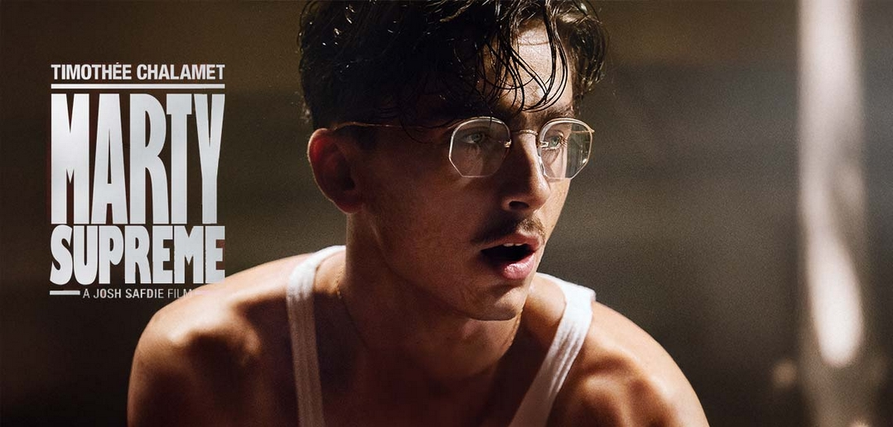
Comme pour HAMNET, je vais vous trouver un résumé sur Internet, il ne sera pas bien long — c'est juste un synopsis rapide. Marty Mauser, 23 ans, aspire à devenir le meilleur athlète sur la scène mondiale du tennis de table.
Le sport est sous-représenté aux États-Unis, ce qui rend difficile le financement de ses compétitions à l'étranger. Il est toutefois prêt à tout pour arriver à ses fins, y compris nouer des liens avec une ancienne actrice et son riche mari entrepreneur. Son entêtement pose un problème pour les personnes de son entourage,
qui font souvent les frais de ses choix cavaliers.
Le réalisateur du film Josuha SADFIE avait déjà travaillé avec le studio A24 (🤍) pour le film UNCUT GEMS (2020 avec en co-réalisteur Ben SAFDIE) qui m'avait énormémen plû avec un Adam SANDLER au
plus haut de son jeu d'acteur — & surtout un rôle qui casse les clichés sur ses choix de films. Avec la promotion mise en place aux États-Unis pour ce film, je n'avais qu'une
envie c'était de le voir. J'ai donc fait l'AVP le 13.02.2026. Je suis loin d'être une grande groupie de Timothée CHALAMET mais je dois avouer que j'ai toujours
aimé sa façon d'intérpréter ses personnages — même si je n'ai pas vu 10 000 films avec lui-dedans — j'ai toujours apprécié sa façon d'incarner les personnes sur lesquels il travaille.
Pour me rensigner un peu en amont du film, j'ai voulu savoir quel était le nombre de licencé de tennis de table dans le monde mais surtout aux États-Unis car le sujet traite particulièrement de ces problématiques
de reconnaissance là-bas, je n'ai pas trouvé de nombres précis pour le pays mais par contre petite annecdote en mode le saviez-vous ? Selon l'IFFT (Fédération International de Tennis de Table), il y aurait
34 millions de licencé.e.x.s dans le monde entier. Je ne me rends pas compte de ce que ce chiffre veut dire mais du coup
Au fond de moi, je m'attendais à voir un simple film de sport — & je pense que beaucoup n'y on vu que ça — pour moi qui ce qui m'a été proposé à l'écan c'est une histoire de passion. Un jeune homme qui ferait ABSOLUMENT tout
pour sa passion. Même si au début il fait le fier, l'ambitieux, qu'il sait qu'il a du talent & qu'il en joue très fortement. Il comprend que s'il veut se faire une place à l'international, il va devoir accepter les humilations. Mais Marty Mauser est plein de ressources
& comme à la UNCUN GEMS (cf paragrape de de desus) le réalisteur met en scène quelqu'un qui met en place toutes les magouilles possibles & inimaginables pour réussir à vivre, surtout de sa passion. Même si au premier abord,
le personnage peut paraître détestable, je me suis attachée à lui. J'ai compris son envie de réussir à tout prix, d'une certaine manière je me suis reconnue en lui (même si je n'ai en aucun cas la force qu'il a). C'est un homme fort et talenteux qui peine à
se faire reconnaître. Même si au fond tout est un peu prévisible — même la fin — je n'ai pas pu m'empêcher d'aimer & surtout d'être émue. Pour cette avant-première française, je mets la note de 🤎🤎🤎🤎/5. J'ai cru comprendre quà la fin de la séance les gens avaient trouvé
ça "sympa" moi j'ai tellement aimé, j'ai été attendrie, je suis passée par toutes les émotions (par contre j'ai entendu quelqu'un dire que c'était largement mieux que HAMNET & oh comment tu parles du meilleur film de 2026 — la meuf qui est pas du tout objective
parce qu'elle a pleuré pendant les 2 heures de la séance).
📖 HURLEVENT
— Emerald Fennell (2026) ; film
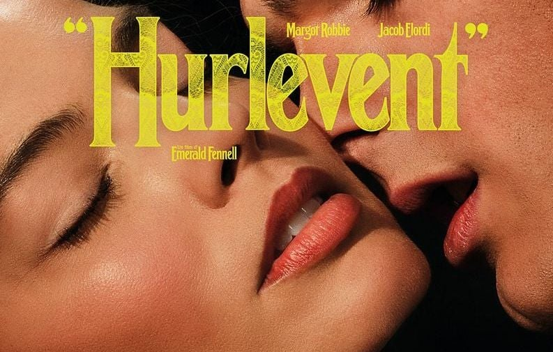
Vous commencez à comprendre, je ne fais plus les résumés moi-même alors c'est parti pour un petit résumé trouvé sur la toile. Le récit reprend la relation tourmentée entre Cathy Earnshaw et Heathcliff.
Leur lien se transforme en une succession de tensions émotionnelles, façonnée par des obstacles familiaux et sociaux. L’évolution de leur histoire souligne les impacts de cette passion sur leur environnement.
L’intrigue explore les sentiments destructeurs qui unissent les deux personnages. Leur attachement nourrit une spirale marquée par les ruptures, les retrouvailles et les effets durables laissés sur plusieurs générations.
Pas que je suis une grande fan de Jacob ELORDI — je crois même qu'il est un peu problématique mais je ne suis pas certaine de cette information —
par contre, j'apprécie énormément Margot ROBBIE (🤍), vraiment j'aime cette femme. Je n'ai jamais réussi à lire le livre d'Emily BRONTË — LES HAUTS DU HURLEVENT (1847).
Je me suis dite que voir cette œuvre d'une façon plus moderne pourrait peut-être me plaire. J'espère à l'occasion avoir la force de lire ce classique — que j'ai d'ailleurs chez mes parents.
Je n'ai pas vu les autres œuvres de la réalisatrice — deux à son actif je crois — PROMISING YOUNG WOMEN (2021) & SALTBURN (2023), qui je me souviens avait été très clivant.
D'après une article que j'ai pu lire ce nouveau film fait énormément écho à son univers habituel — je cite "aimer à se détruire".
🎞️ FOCUS SUR CINÉFAC
Pour rappel, CinéFac — dont je fais partie en tant que secrétaire 📝 — est un ciné-club associatif présent dans la ville depuis maintenant plusieurs dizaine d'années. C'est le lieu de rassemblement des cinéphiles ou des novices curieux emblématique de la vie universitaire de Clermont-Fd. Durant toutes les périodes scolaires, à 20 heures tous les mardis à L'AMPHI AGNÈS VARDA (29 Bd Gergovia) un film y est projetté. D'autres événements OFF peuvent avoir lieu d'autres jours, souvent en partenariat avec le CROUS (situé 25 rue Étienne Dolet). Le cine-club s'organise pas thématiques en tryptique ou en dyptique. Des séances spéciales peuvent aussi avoir lieu — je pense cette année au partenariat avec le festival d'animation ANIMADE IN FRANCE (du 06.03.2026 — 13.03.2026). Le programme entier est disponible en épinglé sur la page Instagram ou ici ici en PDF, il ne faut juste pas prendre en compte la soirée OFF de mon association QRDB qui a été annulée pour raisons de santé. Lorsque nous faisons la programmation on tente de choisir des films plus ou moins niches pour faire découvrir de vrais chefs d'œuvre à toute personne intéréssée par le cinéma. Personnellement — je ne vais pas vous mentir — je n'ai pas vu ¼ des films proposés. Pour revenir dans le game de la culture, je vais essayer d'y aller le plus souvent possible — sachant que je suis censée être un membre actif... & que toutes les séances sont gratuites pour moi.
🎟️ LES SÉANCES
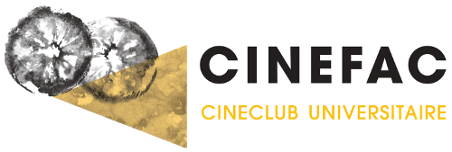
🎭 TO BE OR NOT TO BE
— Ernst LUBITSCH (1942)
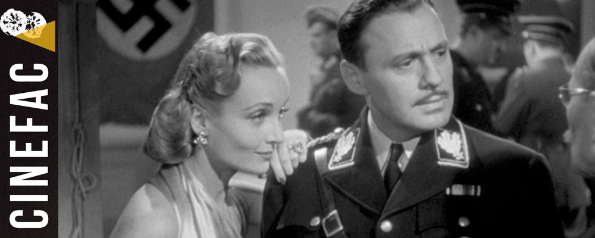
Sur le site site web de l'association — que j'essaie de metre à jour régulièrement — il y a des
mini-résumés avec une très courte ≠critique. Mais je vais tout de même faire l'effort de vous faire une rercherche web avec un résumé plus conséquant.
Varsovie, 1939. Une troupe de comédiens prépare la pièce antinazie Gestapo, mettant en scène Hitler. Parmi les comédiens, un couple, Maria et Joseph Tura, mari jaloux
et comédien susceptible. Lorsque la guerre éclate, la représentation de cette pièce ayant été interdite, il ne reste plus à la troupe qu’une possibilité : reprendre Hamlet. Joseph Tura déclame le fameux monologue
« To be or not to be » (« Être ou ne pas être » ) pendant que sa femme, Maria, reçoit dans sa loge l’officier Sobenski qui est amoureux d’elle. Pour fuir vers l’Angleterre, les comédiens vont
devoir mener un double jeu, se fondre dans la peau de personnages et même, dans celle du Fürher.
Le synopsis me tentait tellement ! Une satire qui prend place durant la Seconde Guerre mondiale, qu'est qui ne pouvait pas me plaire ? Et pourtant, j'ai quand même hésité à y aller. Pourquoi me direz-vous ?
Parce que c'est un vieux film — pas que je n'aime pas les films anciens — c'est surtout que j'ai peur de ne rien comprendre, que ça soit aux dialogues, à l'humour, à la mise en scène... C'est mon grand soucis
avec le monde de la culture, je le répète souvent : j'ai peur de ne pas être légitime à regarder certains films : trop bête, pas assez cultivée ou je ne sais pas... Pourtant, je suis la première à dire
que la culture est accessible à toustes (ou surtout qu'elle doit l'être). Alors, je ne comprends pas d'où vient cette peur qui me frustre plus qu'autre chose, qui m'empêche de faire des choses qui me tentent,
c'est tellement bête de se brider pour ça. Alors, j'ai décidé de sauter le pas.
Et j'ai bien fait !!! Ce film était le premier du tryptique Comédies Loufoques & c'est vrai qu'il rentrait parfaitement dans cette catégore — combien de fois ai-je pu rire ?
Je ne pourrais vous le dire, tellement j'ai trouvé ça excellent de bout en bout. Au niveau réalisation bon on va pas se le cacher ça reste un vieux film (1942) donc nous avons eu le droit
aux magnifiques fondues au noir mais ce n'est pas grave le plus important ici c'est le sujet traité & la façon dont ça été fait. J'ai aimé le fait
En tout cas, je ne peux que vous le conseiller — même si comme moi vous avez peur des vieux films en vous pensant illégitime, oubliez totalement ce sentiment — le film est accessible à toustes & même si l'humour est différent et propre à toustes, je trouve que celui-ci
est plutôt universel. Surtout dans le contexte politique qui y est installé, faire de l'humour sur le régime nazi en 1942, il fallait l'oser — même si c'est un film américan donc ils étaient pas touchés par la GESTAPO. Cependant le réalisateur
Ernst LUBITSCH est d'origine allemande — il n'a pas quitté son pays pour la guerre il est parti dans les années 20 — mais c'est un sujet qui a dû le toucher directement. Je mets la modique (ironique) note de 🤎🤎🤎🤎/5 avec un petit 🧡.
🎶 MUSIQUE
🎧 PLAYLIST FÉVRIER 2026
Je n'ai pas vraiment fait de concerts en février 2026 — particulièrement parce que j'en étais pas capable — vous verrez juste dans la catégorie du dessous 🥳 ÉVÉNEMENTS que j'ai juste pu assister seulement au set d'une rappeuse. Du coup, pour combler le vide de cette catégorie, qui est pour moi une grande partie de ma vie, j'ai décidé de faire une playlist de mes sons les plus écoutés ce mois-ci (TW : RAP DES ANNÉES 90 — oui j'ai eu une phase obsessionelle). Vous allez voir on est sur un mélange de tradition & modernité. Playlist juste ici ⤵️
J'ai écrit un "article" sur le rap engagé des ANNÉES 90/2000 sur @maetalksabout, je vous mets le lien juste ici : lien vers l'article 🎵. & si vous avez la flemme de lire la publication en entière, je vous mets juste la partie la plus importante à mes yeux en dessous ⤵️
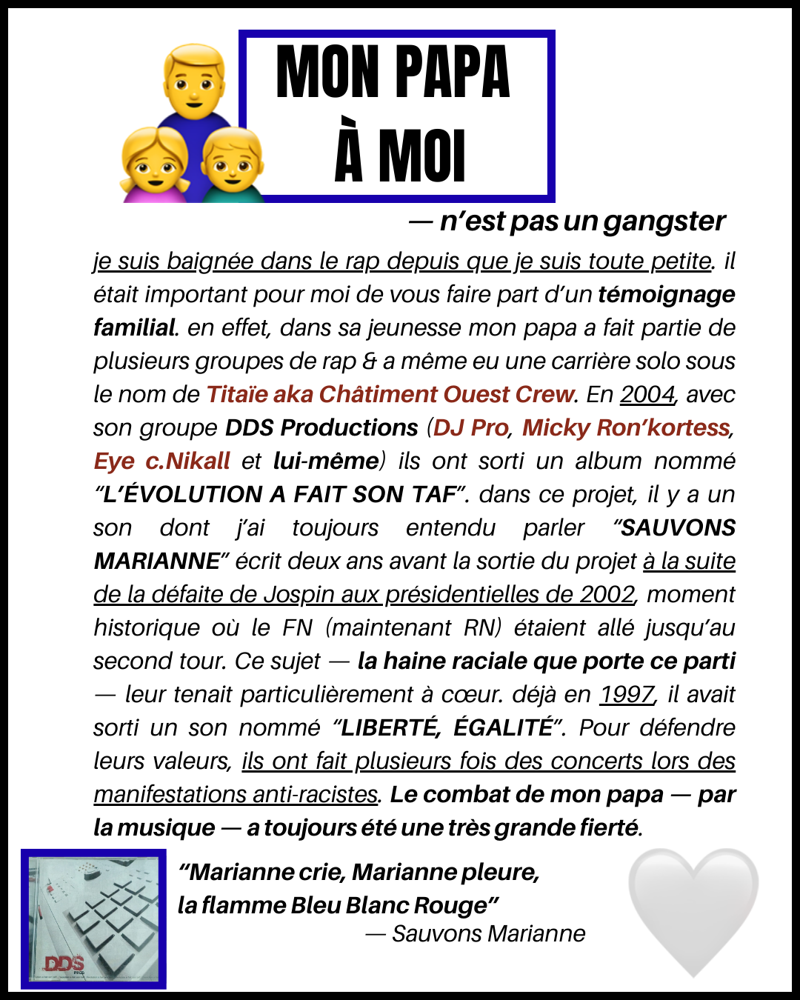
& le lien du morceau sur YouTube ⤵️
🥳 ÉVÉNEMENTS
🎤 STUDIO 2044 X COLLUSIIION #3
La soirée du 14.02.2026 qui a eu lieu au Lieu-Dit (🤍) (10 rue Fontgieve — Clermont-Fd) s'est divisée en deux étapes. La première est une session
découte du morceau AMITIÉ, GOÛT VANILLÉ dans le cadre du projet STUDIO 2044 portée par deux associations clermontoises
qui sont OSBLC & ART, CUISINE & HANDICAP (ACH). Ce projet avait pour but de permettre à des jeunes atteint.e.x.s de troubles de neurodéveloppement et/ou psychiques
de mettre un pied dans le monde musical — particulièrement du rap — en les aidant à créer leur texte, à poser sur une prod puis à enregistrer en studio. Selon moi,
une très belle initative associative ! Cette session d'écoute était accompagnée de pizzas maisons préparées pas les jeunes de ACH & le moment collectif était sur invitation, les personnes
étant conviées par les jeunes de l'atelier eux/elles-même.
La deuxième partie de soirée était un concert de rap surnommé COLLUSIIION #3 avec trois rappeuses (ANZU, NEMONE & OORALISE — si vous souhaitez en
apprendre plus sur ces artistes n'hésitez pas à aller sur leurs comptes Instagram respectifs ou sur celui d'OSBLC_2044 qui a fait des descriptions précises du style de chacunes de ces rappeuses) & la soirée s'est terminée
sur un DJ Set de DAMIL du collectif contrepoint.
Malheureusement à cause de mes soucis de santé, nous n'avons pu voir qu'un seul set,
celui de NEMONE, une rappeuse aux sonorités boombap, dont le set était tourné autour de la colère (TW — VSS ou encore sur les relations amoureuse & la mysognie dans le rap). J'ai bien aimé l'interprétation & ses prises de parole étaient plutôt sympas et pertinantes.
Je voulais vous mettre une intégration vers un de ses projets mais j'ai rien trouvé... même son compte Instagram que OSBLC a partagé ne semble pas valide ☹️. Par contre, je ne peux pas vous donner d'avis sur OORALISE sachant que nous sommes pas restées pour sa partie. Par contre, ANZU est une rappeuse
aux sonorités pop que j'apprécie & que j'écoute de temps en temps. Après une petite pause, elle a sorti un nouvelle EP nommé "DANSE MACABRE" où elle sort un peu de ses habitudes musicales. Je vous mets une intégration Spotify juste en dessous.
Même si nous ne sommes restés moins d'une heure, c'est déjà un début, le début de soirée était top avec une super ambiance, évidemment portée par les différentes associations qui gravitent autour
du Lieu-Dit.
L'EP d'ANZU ⤵️
OBLC a proposé à mon association Quelle Rime d'Bâtard (QRDB) — une association de médiation culturelle autour du rap & de la culture hip-hop : Instagram de l'association — de participer à notre manière
à cet événement — & c'est évidemment avec plaisir que nous avons accepté. Notre travail était simple & surtout super intéressant & enrichissant sur un plan personnel, il
nous a aussi donné des idées de sujets à aborder (car pour celleux qui ne le savent pas on fonctionne en thématique par mois).
Je me suis un peu perdue dans mes explications,
en gros, on a écrit des textes pour une mini-exposition sur des rappeur.euses atteint.e.s de différents syndromes psychiques ou de neurodéveloppement mais
on a aussi pu parler d'initiative (un peu à l'image du STUDIO 2044) à direction de ce type de public, par exemple en UHSA ou encore — directement à Clermont-Fd
en DITEP avec le projet Dans la peau d'un rappeur. Pour nous, ça a été une belle occasion de travailler sur un sujet qui nous tenait à cœur & surtout de
pouvoir mettre en avant des artistes/initatives encore trop underground — on ne va pas se mentir le monde du rap est encore trop fermé à la différence & le simple fait
d'être un femme dans ce milieu pose problème, alors imaginez pour les personnes en situation de handicap...
Je vous mets des photos de l'exposition juste en dessous ⤵️

🎭 & 💃 THÉÂTRE/DANSE (ARTS DE LA SCÈNE EN GÉNÉRAL)
⚔️ NELVAR, LE ROYAUME SANS PEUPLE
— Logan De Carvalho (2026) / Théâtre

Je vous mets directement le résumé 📝 écrite pour les différentes représentations de cette pèce de théâtre car je suis très très nulle en résumé,
si vous avez lu ma première story à propos de la première séance que j'ai visonné durant le Festival, je suis très nulle en résumé — c'est pourquoi après je mettais seulement les
résumés du site web.
Comment faire lutte commune dans un monde toujours plus fragmenté? Logan De Carvalho fait un détour par l’ heroic fantasy pour interroger le mythe du vivre-ensemble, dans une aventure
théâtrale pleine de surprises qui réconcilie les êtres comme les genres.
Au royaume de Nelvar, elfes, orcs, trolls et mages cohabitent malgré leurs histoires et aspirations divergentes.
Mais, à la mort d’un roi sans héritier, ce fragile équilibre vacille. Partant d’un groupe d’acteur·rices qui donnent vie avec humour à ces créatures sur scène, Logan De Carvalho décortique les fictions les plus contemporaines à travers les archétypes
assumés de la fantasy : à chaque espèce, un registre de langage emprunté aux codes sociaux d’aujourd’hui. Les comédien·nes endossent tour à tour le rôle de narrateur·rice, faisant surgir les paysages et les légendes de ce monde fictif.
La musique, jouée en direct, fait exister les combats d’épées ou les traversées de montagnes, nous laissant glisser peu à peu vers le merveilleux. Un théâtre populaire et exigeant, comme un miroir magique où l’imaginaire invite à mieux comprendre l’autre – et soi-même.
Nous avons eu la chance de pouvoir voir gratuitement ce spectacle grâce au dispositif Si T Jeune, pour celleux qui ne connaîtraient pas, c'est en fait une carte délivrée par la Ville pour tout jeune de 12 à 27 ans,
travaillant, résident ou étudiant de CLermont-Fd, cette carte offre de nombreux prix préférentiels dans un tas de structures de la Ville — je pense particulièrement à La Coopérative de Mai. De plus, ils proposent aussi souvent des activités
sportives totalement gratuites & pour ce coup-ci ils nous proposaient — sur places limitées — de voir cette pièce de théâtre précédée d'une visite guidée de La Comédie ce Clermont-Fd (labellisée scène nationale depuis 1997).
Comme pour le FRAC Auvergne, je trouve
que je ne vais pas assez régulièrement dans cette salle de spectacle — sachant que je ne suis pas forcément fan de danse ça réduit les spectacle que je pourrais voir — ma dernère séance coup de 🤍 là-bas
a été la pièce de théâtre « LE FIRMAMENT » — écrit par Lucy Kirkwood & mis en scène par Chloé Dabert, une sorte de reprise du film « 12 HOMMES EN COLÈRE » — Sidney Lumet (1957) mais avec des femmes. Je ne sais pas si une captation
existe — mais si c'est le cas je ne peux que vous la conseiller. Je ne mets pas le résumé car ce n'est pas le sujet de cette critique mais si vous voulez vous renseigner, n'héistez pas à faire vos recherches sur Internet. D'ailleurs, j'avais vu cette répresentation gratuitement lorsque j'étais bénévole à l'association AFEV Auvergne,
une magnifique association d'utilié publique donc si vous voulez y être volontaire je vous mets le site internet juste ici : AFEV Auvergne.
DONNER NOTRE AVIS
🖼️ EXPOSITIONS/MUSÉES
🇯🇵 GUIMET + JAPON — MUSÉE D'ART ROGER-QUILLOT (MARQ)
— visite guidée (1h)
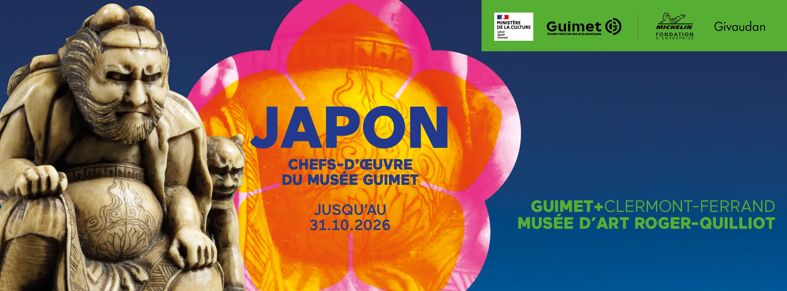
À la toute base, nous n'avions pas prévu de faire cette visite en particulière mais on s'est rendu compte un jour trop tard que les visites guidées des collections permanentes n'étaient que le premier dimanche du mois.
Nous avions déjà fait la collection permanente il y a quelques mois maintenant, de notre propre chef — sans personne pour nous guider & nous expliquer — & on aurait bien voulu en savoir plus sur quelques œuvres. Mais finalement, on s'est dit que la collection
en partenariat avec le MUSÉE GUIMET ne serait pas toujours présente donc nous avons décidé de faire cette visite ci. Personnellement, les arts asiatique ne m'ont jamais attirés plus que cela — à part les mangas — donc je me suis dite que
c'était l'occasion d'en découvrir un peu plus sur ce pays — car on se concentre ici sur le Japon. Je vous mets la présentation de l'explication juste ici : À Clermont-Ferrand, le Japon sera à l’honneur jusqu'au 31 octobre 2026 au musée d’art Roger-Quilliot. Des oeuvres anciennes remarquables mettent ici en lumière l’histoire du Japon, de ses seigneurs de la guerre, de ses codes de beauté, de la rencontre de ses religions et de l’humour truculent de ses rebelles.
Elles invitent à découvrir et à questionner d’autres façons d’être au monde, d’autres sensibilités, d’autres façons de rire ou de trouver sa place dans la société. Laissez-vous surprendre par les fantômes, les yokai farceurs, les samouraïs et les dames de cour.
Cette exposition permet de mettre en valeur un fonds patrimonial constitué de collections anciennes et contemporaines jusqu'alors peu présentées au public, dont un kimono de jeune fille en soie damassée et imprimée et en broderie de fil métallique doré et une paire de chaussures de femmes en bois laqué.
Je trouve cette explication vraiment alléchante — je ne sais pas qui l'a écrit mais félicitation (pour qui je me prends ???). En lisant mieux la documentation — directement sur le site du MUSÉE GUIMET — j'en ai appris un peu plus sur leur politique de médiation & la façon dont ils
souhaitent faire raisonner les arts asiatiques dans la France. Ce projet de médiation nommé GUIMET + passe par un dispositif d'exposition dans différents musées du pays avec à chaque fois des territoires différents. Voici les musées partenaires de la saison 2025 — 2026 : donc, le MARQ avec le Japon,
MUSÉE FABRE — Montpellier (34000) mettant en scène la Chine & la MAISON ALEXENDRA DAVID-NEEL — Digne-les-Bains (04000) faisant rayonner l'Inde. Personnellement, je trouve cette initative dingue, enfin je la trouve super
intéressante car on le sait — malheureusement — les grands espaces de découvertes culturelles & artistiques se passent à Paris & le fait que certains de ces lieux tentent des choses en """""""province""""""" (vous avez dû remarquer je HAIS cette expression) est super chouette. Ça existe déjà avec
le LOUVRE-LENS ou bien même à Clermont-Fd où mille formes qui est directement en lien avec LE CENTRE POMPIDOU (je suis en deuil 🥲 — comment ça je dois attendre 2030 pour y retourner ???).
Nous sommes donc allés un dimanche apèrs-midi, un jour de pluie et de brouillard, prendre le tram pour arriver jusqu'au MARQ. Nous avons été accuillis par un méditeur super renseigné et surtout adorable, passioné par son métier. On n'y connaissait
absolument rien au sujet, on ne savait pas à quoi s'attendre & finalement j'ai été admirative devant toute cette culture — qui était pour moi totalement inconnue, parce que je n'ai jamais pris le temps de m'y intéresser. J'y ai appris le lien entre les arts orienteux & occidentaux.
Malgré un pays qui est toujours resté très fermé, sauf au commerce avec les Hollandais. J'ai découvert les trois types de théâtre japonais dont le Kyōgen, le plus léger de cette pratique artistique qui peut se référer chez nous au burlesque.
Cette explication était accompagnée de deux masques de théâtre dont un représentant la légende d'Hannya, une histoire très connue au japon. Si ça vous intéresse vous avez juste à cliquer ici (un article qui vulgarise assez bien la légende —
même si pas totalement indentique à celle que j'ai pu entendre mais c'est un mythe, il n'est jamais raconté de la même façon). J'ai vraiment appris beaucoup de choses — j'ai des notes & des notes sur un petit carnet de tout ce que le monsieur nous a raconté.
Je ne vais pas trop m'étaler mais si vous avezl'occasion n'hésitez pas (surtout en visite commentée.)
Je vous mets un petit aperçu de quelques œuvres ⤵️

🪖 LES 31 000 FEMMES RÉSISTANTES DÉPORTÉES — MUSÉE DE LA RÉSISTANCE, DE L'INTERNEMENT & DE LA DÉPORTATION
— visite commentée (1h)
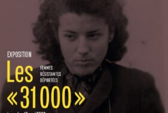
Une ptite description de cette exposition éphémère (20.10.2025 — 16.05.2026 ; vous avez encore le temps) est de mise.
Cette exposition retrace l'histoire du premier grand convoi de déportation de femmes résistantes et victimes de la répression.
C'est le seul convoi de femmes résistantes à être dirigé sur le camp d'Auschwitz II. Elles seront surnommées les "31 000", du fait de leur immatriculation dans cette série. Des objets, films et
documents viennent enrichir cette exposition.
J'étais déjà allée une fois au musée de la Résistance, de l'Internement & de la Déportation situé à Chamalières (63400). C'était pour une exposition sur le rôle de Michelin pendant la Seconde Guerre mondiale.
Sans vous mentir, je ne me souviens DE RIEN mais quitte à y retourner je verrai avec elleux s'iels ont de la documentation.
Bon, j'ai galéré à trouver l'endroit sur le site où iels indiquaient la visite guidée... (après pour le coup je suis vraiment juste bête ; il suffisait de descendre plus bas) & surtout les dates de ces visites. Je vous les mets en liste juste dessous ⤵️
- Vendredi 23 janvier 2026 à 10h
- Samedi 7 février à 10h
- Lundi 16 février à 10h
- Mercredi 4 mars à 10h
- Jeudi 19 mars à 10h
- Samedi 18 avril à 10h
- Jeudi 23 avril à 18h
- Lundi 4 mai à 10h
- Samedi 16 mai à 10h
Va trouver une date qui t'arrange quand tu travailles la semaine — bon certes je suis en arrêt de travail — mais
il n'y a cependant que deux visites commentées par mois, c'est un petit musée donc en vrai je comprends. Mais ce qui m'embête le plus c'est que j'ai dû appeler pour réserver
& moi et les appels téléphoniques avec des inconnus... Mais bref passons, j'avais vraiment envie d'étudier ce sujet — même si j'avais peur que ça soit assez dur. Finalement
aucune violence ou autrocité ne sont dégagées de cette exposition. C'était surtout une mise en avant de quelques portraits de femmes & leur histoire "extraordinaire", des femmes qui ont
osé se lancer dans la résistance en prenant tous les risques. Malheureusement, le pire est survenu... elles (230 femmes) se sont faites déportées dans un premier temps à Auschwitz, seul camps
où on tatouait les déportés, on les appelle les ""31 000" parce que leur numéro de matricule commençait toujours par 31. Elles sont fortes, braves, courageuses... & celle qui on pu se sortir
de cette horreur, on laissé des traces, on écrit des œuvres, on témoigné, elles ne se sont pas tues, au contraire elles ont parlé de leur histoire. Une d'elle a écrit plusieurs ouvrages avec différents procédés de style.
Cette dame se nomme Charlotte DALBO et a écrit une livre bibliographie sur chaque femme de ce convoi des 31 000. Il y a d'ailleurs une conférence sur sa vie & son œuvre
le 31.03.2026 à 18h30 dans une salle en face du MUSÉE DE LA RÉSISTANCE, DE L'INTERNEMENT & DE LA DÉPORTATION. J'hésite à m'y rendre.
Je ne vais pas écrire ici tout ce que j'ai appris si le sujet vous intéresse je vous conseille de vous y rendre — & surtout de faire la visite commentée (même si je sais que les dates sont rarement compatibles
avec nos emplois du temps — d'ailleurs y avait que des retraités avec moi). Comme d'habitude je mets un petit encadré de quelques photos prises ⤵️

👩🎨 LES VISITES MAL GUIDÉES — EXPOSTION « IN VIVO »
— cie pjpp
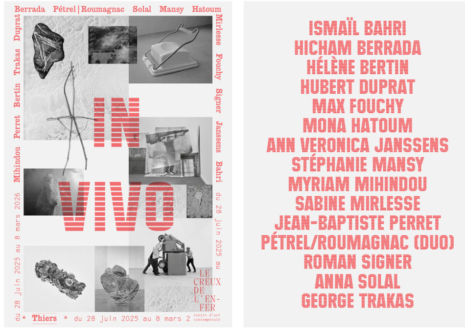
En collaboration avec la Comédie de Clermont-Ferrand (encore-eux !), nous sommes allés à une visite dite mal-guidée au Creux de l'Enfer à Thiers,
je vous mets le résumé de la Comédie, ça sera toujours mieux expliqué que par mes soins.
Les Visites Mal Guidées consistent à guider un groupe de manière absurde, voire inefficace, dans le cadre d’une création immersive qui se réinvente dans chaque lieu, en fonction des œuvres, du cadre, de l’environnement,
dans le but de nous faire « voir autrement ».
Je vous joins aussi un résumé plus complet de l'exposition avce le nom des artistes. L’exposition collective « IN VIVO » fait partie de la saison ¡Viva Villa! 2024-25, une initiative portée par quatre résidences d’artistes à l’étranger: la Casa de Velázquez (Madrid), la Villa Albertine (États-Unis), la Villa Kujoyama (Kyoto) et la Villa Médicis (Rome).
Les oeuvres d’Hicham Berrad ont été empruntées auprès de la galerie Kamel Mennour.
Les pièces de Hubert Duprat ont été empruntées au Frac Lorraine et à la Galerie Art Concept.
Les oeuvres de Mona Hatoum ont été empruntées auprès de a Fondation Mona Hatoum et du Frac Picardie.
L’installation de Myriam Mihindou a été produite en partenariat avec l’Agence des Musiques des Territoires d’Auvergne.
Les créations de Max Fouchy ont été réalisées au cours d’une résidence au Lycée général et technologique Jean Zay de Thiers, avec le soutien de la Région Auvergne-Rhône-Alpes.
Les oeuvres de Sabine Mirlesse sont le fruit d’une résidence au sein de l’Atelier 1515, avec le soutien de la Fondation Syndex.
Les films de Jean-Baptiste Perret sont issus d’une résidence qui s’est déroulée dans les parcs naturels régionaux du Livradois-Forez et du Pilat en partenariat avec la Ville de Saint-Étienne et avec le soutien du Cnap et de la Drac Auvergne-Rhône-Alpes.
L'exposition « IN VIVO » est visitable du 28.06.2025 - 08.03.2026, je sais, je sais, encore une fois il restera peu de temps pour faire cette exposition
à la sortie de cette Newsletter Culturelle. Il y a des visites guidées & plein de choses chouettes sur le lieu — nous n'y étions encore jamais allés — je vous laisse le lien du site web
de cet espace d'art contemporain : LE CREUX DE L'ENFER & d'aller voir l'espace AGENDA. Nous avions quelques appréhensions — très peur du cringe — surtout que me copain est très très (je n'exagère vraiment pas) gêné facilement — face à cette exposition & surtout
face au concept mais ces visites mal-guidées n'avaient lieu que pendant le week-end du 21.02.2026 - 22.06.2026 donc nous avons voulu sauter le pas & tenter quelque chose de nouveau,
pour sortir de notre zone de confort & pour que je me change un peu les idées. Notre crainte se portait surtout par l'une des dernières expériences d'art contemporain que nous avions faites à Londres au musée Tate Modern — si je ne me trompe
pas de musée — qui nous avaient vraiment pas plû du tout mais vraiment absolument pas ☹️.
DONNER NOTRE AVIS
ℹ️ INFROMATIONS PRATIQUES SUR LES MUSÉES & LIEUX D'EXPOSITION
D'ailleurs, je ne savais pas trop où caler ça parce que je n'ai pas fait d'introduction à cette catégorie 🖼️ EXPOSITIONS/MUSÉES mais
je tenais à vous dire qu'à Clermont-Fd & ses alentours, il y a pas mal de musées & de lieux d'exposition (mais bon je pense ne rien vous apprendre) mais ce qui est sympa, c'est que les
musées proposent plein d'activités — certes beaucoup basées pour les pitchounes mais on y trouve aussi notre compte — donc je vais vous mettre en lien la brochure de Clermont Auvergne Métropole
avec toutes les activités prévues de janvier 2026 — mars 2026 & certainement que fin mars 2026 il y aura un nouveau programme que je vous partagerais évidemment au moment voulu. Cette
brochure ne regroupe pas les lieux comme le FRAC Auvergne ou encore l'Hôtel Fontdreyde mais seulement les musées de la Métropole. Si vous avez envie de savoir quasiment TOUT
ce qu'il se passe à Clermont-Fd je vous invite à vous rendre sur le site de l'Office de Tourisme Clermont Auvergne Volcans, si vous allez dans l'onglet AGENDA vous
trouverez votre bonheur 🥳. Bon à la base, je parlais de la plaquette des activités proposées par les musées à ou autour de Clermont-Fd, donc la voici.
Personnellement, il y a quelques trucs qui me tentent bien par exemple le samedi 21 mars 2026 au MARQ l'activité Immersion au Japon autour du Matcha en relation direct grâce à leur partenariat avec
le Musée GUIMET — Musée National des Arts Asiatiques — Paris (75116) & la conférence "CHARLOTTE DELBO, SON PARCOURS DE VIE ET SON ŒUVRE EXCEPTIONNELLE SUR LA DÉPORTATION" dirigée par Ghislaine Dunant —
écrivaine et autrice de Charlotte Delbo. La vie retrouvée (Prix Femina de l’Essai 2016) et Un amour infini, roman (Sélection Prix Goncourt 2025) qui se passera à la salle Courty — Chamalières (63400).
Cette conférence aura lieu le mardi 31.03.2026 à 18h30. Honnêtement je vais essayer d'aller à l'atelier du MARQ mais la conférence de Ghislaine Dunant je ne suis pas certaine, surtout par faute de temps
plutôt que d'envie — même si je me connais & qu'il faut que je me force à bouger mes fesses du canapé sinon je ne fais rien de la journée — mais tout ce que j'ai fait en mars 2026 vous le verrez le 31.03.2026 😉.
Je vous ai déjà parlé de pas mal de lieux culturels dans Clermont-Fd, j'aurais pu citer BARGOIN (qui je crois va se refaire une beauté) mais j'y suis allée qu'une seule fois ou encore le muséum d'histoires naturelles de notre Ville MUSÉUM HENRI-LECOQ mais je n'ai jamais
pris le temps de le faire, surtout parce que le sujet principal m'intéresse beaucoup moins — mais Dieu sait que dans CHAQUE ville où on va mon copain me traîne dans tous les muséums d'histoires naturelles qui existent.
Je reviens sur le MUSÉE BARGOIN il fermera effectivement ses
portes le 31.07.2026 & selon Clermont Auvergne Volcancs : "à sa réouverture, il sera entièrement consacré à l'archéologie et l'histoire du territoire et les œuvres textiles extra-européennes rejoindront les collections du Musée d'art Roger Quilliot." De ce que j'ai compris,
il est actuellement en ouverture partielle — en prévision des travaux — mais du coup ça me tente bien d'y retourner avant sa fermture. Peut-etre en mars 2026 ou en avril 2026 car j'en ai déjà fait beaucoup ce mois-ci &
même si c'est thérapeutique pour moi, ça reste extrêmement épuisant. Je fais beaucoup de choses les week-end car mon copain ne travaille pas & me motive donc à faire différentes activités/sorties mais sinon je
végète dans mon canapé en ruminant sur mon mal-être constant. Donc, je vais essayer les mois prochains de me faire une visite seule & donc sûrement à BARGOIN où il n'y a seulement que deux collections visibles en ce moment
le sanctuaire de gallo-romain de la Source des Roches & l'œuvre Cavalier à l’Anguipède. Je me dis que ça sera une mini-sortie qui me prendra pas énormément de temps & qui me permettrait de faire
quelque chose seule — chose qui est quasiment impossible pour moi en ce moment. Il y a l'air d'avoir des visites guidées/commentées du musée mais je ne sais pas si c'est encore d'actualité avec le début des travaux — il faudrait que je me renseigne.
En tout cas, sur la brochure que je vous ai partagée plus haut, il y a quelques événements mais seulement pour les enfants & les familles. Donc à voir avant juillet 2026 si j'ai envie d'y retourner pour me faire une mini-visite des
collections encore visibles.
Je voulais vous parler d'un dernier truc dont j'ai déjà évoqué pendant le paragraphe sur GUIMET +, c'est le centre d'art contemporain mille formes (rue Fotngiève — Clermont-Fd (63000)).
C'est un lieu d'exposition pour les enfants de 0 — 6 ans où il se passe énormément de choses. Je n'ai jamais osé y aller car je suis une grande adulte de 21 ans mais je crois que nous aussi on est invité à y entrer... & j'aimerais tellement voir tous
les dispositifs mis en place pour faire découvrir l'art aux plus petits. Je sais que je ne franchirais jamais le pas (à part peut-être dans le cadre de mon Service-Civique mais sinon non) mais je suis tellement curieuse & les artistes ont l'air tellement
chouettes. C'est un lieu municipal qui mérite d'être plus connu même si je sais que les personnes qui liront cette Newsletter Culturelle ne sont déjà plus — depuis longtemps — le public ciblé.
Sinon, il y a tellement d'autres lieux municipaux qui proposent des choses artistiques / culturelles / de cohésion / sportives / manuelles (...) : LA MAISON DE L'ORADOU, LE CENTRE CAMILLE CLAUDEL ou encore LE TIER-LIEU JEUNESSE ANATOLE FRANCE et
je sais que j'en oublie. Alors si tout ça vous intéresse n'hésitez pas à chercher ou simplement à me demander & j'ai en fait trouvé une brochure avec tous ces lieux.
⚠️ INFORMATIONS ÉVÉNEMENTIELLES POUR MARS 2026
Au mois de mars aura lieu le festival ANIMADE IN FRANCE, un festival qui met à l'honneur l'animation française. Cependant à la sortie de la Newsletter Culturelle de mars 2026 il aura déjà eu lieu !!! Donc je vous mets ici le lien du programme de l'édition #3 pour pouvoir vous organiser à l'avance. Je vous mets aussi juste en dessous l'image de la programmation (comme ça pas besoin de lire toutes les pages de la brochure) ⤵️
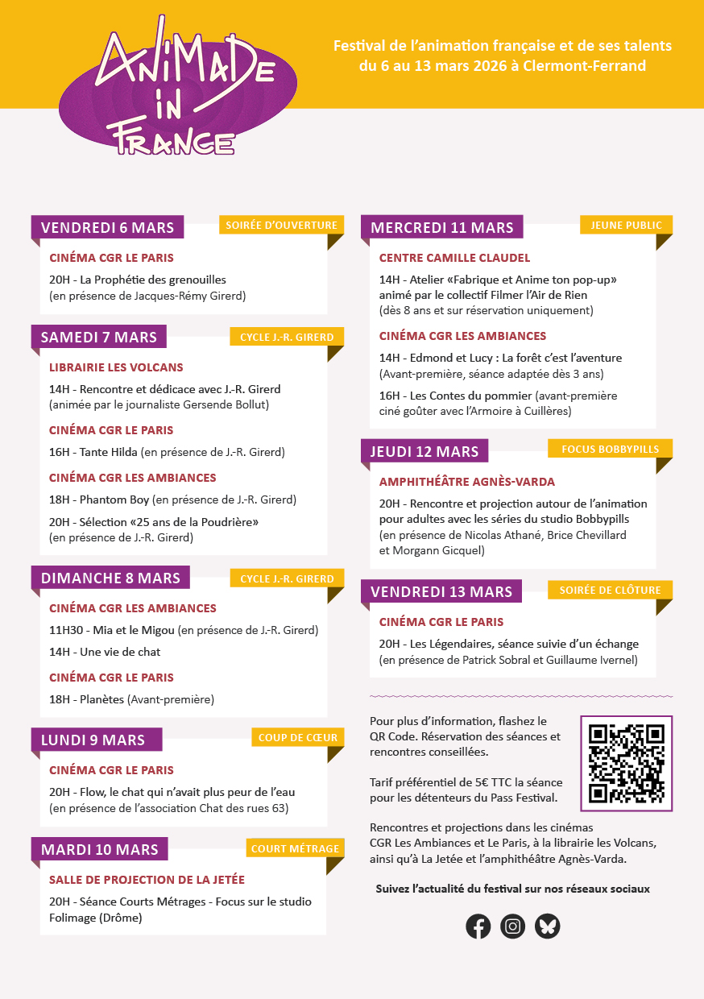
Il y aura aussi la 41 édition du festival VIDEOFORMES, festival d'arts hybrides & numériques. Le site est mal foutu faut un peu chercher pour trouver la programmation 2026 donc vous avez juste à cliquer ici pour en savoir un peu plus. Attention, c'est un peu perché comme Festival.
🍩 NOS AUTRES SORTIES NON-CULTURELLES
🥤 & 🍪 BOISSONS/NOURRITURES
Je voulais tout de même vous parler des autres choses que j'ai pu faire pendant le mois de février 2026, que ça soit avec mon amoureux ou mes ami.e.s.
Ce ne sont pas vraiment des découvertes (cf : post Instagram sur @maetalksabout « je fais la touriste dans ma propre ville » au mois de janvier 2026).
Mais pendant ce mois-ci, j'ai quand même pu faire découvrir à certaines personnes des endroits ou retourner dans des lieux que j'affectionne tout particulièrement donc c'était important pour moi d'en parler.
Juste pour prévenir la mise en page de cette partie va être un peu particulière avec des espaces élargis, des titres éloignés... mais si je voulais que ça soit parfait, il aurait fallu que j'amuse à jouer
avec le CSS & l'HTML & honnêtement j'en avais pas la foi. Alors je m'excuse si ces paragraphes vous gênent un peu dans votre lecture, promis j'ai fait au mieux. Bonne lecture & surtout bonne dégustation 🍽️.
🍵 THE COFFEE — 27 rue Saint-Genèse, Clermont-Fd
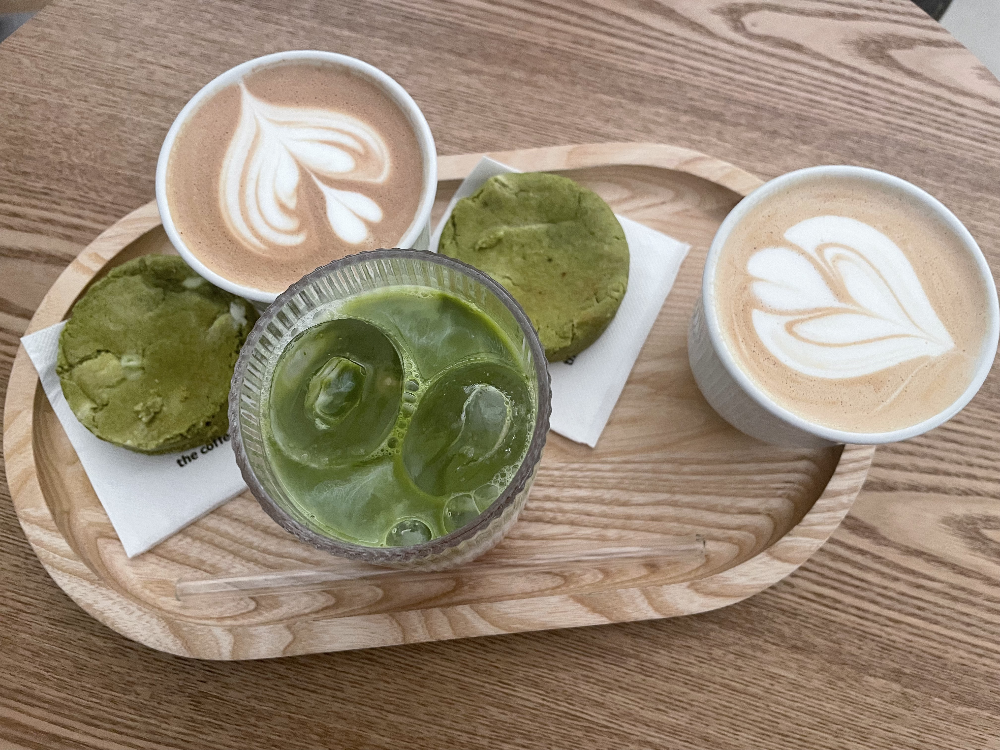
Un de mes cafés préférés de Clermont-Fd — même si malheureusement ce n'est pas un café indépendant — c'est une énorme chaine présente partout dans le monde — mais je ne peux pas résisiter à leur café goût chocolat (désolée, je ne me souviens plus du nom précis du café). Il y a d'excellentes patisseries comme des cinnamon rolls & des cookies au matcha vraiment trop bons. Les tarifs sont un peu exagérés mais vu que mon rêve est d'être une grosse bobo parisienne, il va bien falloir que je m'y fasse. En tout cas, moi je vous conseille ce café juste à côté de la place de la Victoire.
☕️ KALDI — 4b Rue Saint-Esprit, Clermont-Fd
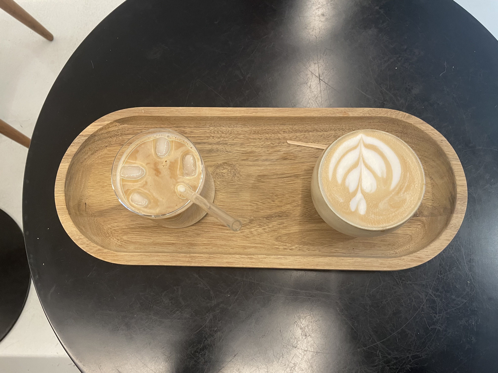
Celui-ci est aussi juste à côté de Victoire — juste en face d'un petit magasins de cookies 🍪 que je souhaite goûter. Dans une petite rue, un panneau miroir vous indique que vous êtes bien arrivés sur les lieux de ce merveilleux café. Pas les sièges les plus agréables de la Terre mais on s'y sent bien avec des serveur.e.x.s vraiment agréables — comme dans tous les endroits que je vais vous citer — il y aussi des gourmandises mais je n'en ai jamais goûté car ils ont toujours été dévalisés avant que je n'arrive... Gros coup de 🤍 sur le café au caramel au beurre salé qui n'est pas sur la carte, il faut le demander.
🥞 L'ENTRE DEUX — 12 place Gilbert Gaillard, Clermont-Fd
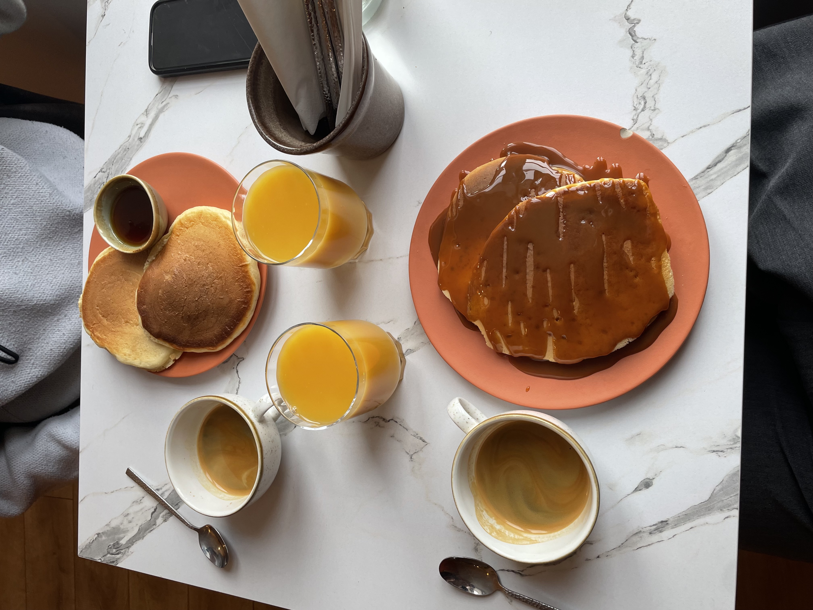
Avec mon copain, on a pris l'habitude d'aller place Gaillard (juste à côté du Lieu-Dit 💛) pour prendre notre
petit-déjeuner le dimanche matin — les serveurs ont commencé à nous reconnaître & j'aime être une habituée d'endroit où on sait à l'avance ma commande.
La formule petit-déjeuner est à 7€ — sans compter les 2€50 en + pour les jus de fruits — comprenant une boisson chaude (espresso/chocolat chaud ou thé)
accompagnée de pancakes 🥞 énormes et vraiment très bons avec soit coulis de poire, caramel au beurre salé ou sirop d'érable.
Bref, tout ça
pour dire que j'aime trop commencer mon dimanche matin vers ≈ 9 heures (parce que après c'est le ménage traditionnel du dimanche matin 🧹 donc bon...).
Vraiment, je vous conseille énormément ce café parce que même un simple espresso y est délcieux.
🌯 FOOD TRUCK — Les Salins
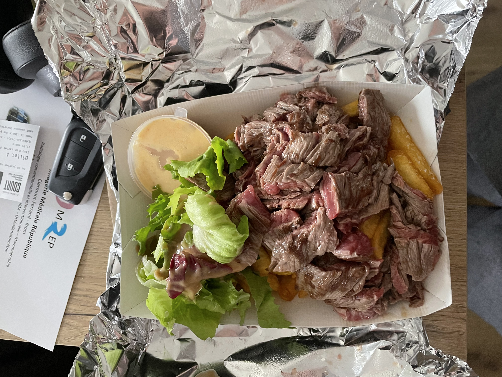
À la sortie de la séance 🏝️ VAC 4, nous sommes tombés sur un food truck qui sentait particulièrement bon — vraiment, avec mon copain nous nous sommes arrêtés nets en sentant l'odeur — on a absolument craqué pour une barquette de bavettes & frites XL qu'on s'est partagé tous les deux. Je dois confesser quelque chose... Je crois bien que c'était la première fois que j'en mangeais, j'ai même demandé à mon copain de quel animal ça provenait (LA MÉGA HONTE)... & moi qui suis particulièrement difficile, j'ai juste adoré cette viande tendre qui se melangeait parfaitement bien avec cette sauce mayonnaise paprika (pas sûre que c'était vraiment ça la sauce mais c'est l'idée). Réellement, je suis tombée amoureuse de cette barquette XL, c'était le meilleur moment du Festival Internation du Court-Métrage de Clermont-Ferrand — j'abuse mais c'était vraiment excellent. Dommage qu'il ne soit là que pour cet événement & pas tous les dimanches pour les puces des Salins parce que sinon adieu les pizzas chorizo du Netto.
J'aurais pu vous parler d'autres endroits de restauration comme You — Brunch & Restaurant où on a pris un excellent brunch un dimanche matin de janvier 2026 ou encore de Cartel — Cycles & Café qui se trouve vers Place Delille je n'y suis pas allée en février mais en tout cas,
je vous les conseille aussi — même si je m'accorde à dire que toutes ces sorties food coûtent un certain prix.
De plus (petit spoiler), nous allons aller faire un brunch céramique en mars 2026 à Popin — Café Céramique à Victoire mais cette formule brunch coûte 98€ pour deux personnes, donc on va un peu économiser pour se faire ce petit plaisir. Si vous êtes intéressé.e.x.s, je vous partage le programme de la formule brunch que
j'ai copié-collé directement du site web : le dimanche à 10h30 et 12h, réservez votre brunch chez POPIN ! Au programme 3h de créativité pour faire de votre dimanche un moment inoubliable. Le tarif comprend : 1 bol vitaminé + des fruits frais + 1 assiette sucrée + 2 assiettes salées + 1 boisson froide (avec ou sans alcool)
+ 1 boisson chaude + 1 pièce jusqu’à 25 €. Je ne vais vous mentir même si 49€ par personne ça picote un peu, nous avons quand même envie d'essayer. Ils proposent aussi d'autres formules beaucoup moins onéreuses. Je vous dirais mon avis sur ce café & d'ici le mois d'avril/mai on tentera sûrement l'autre café-céramique de la Ville : le Café Céramique PomPom.
Évidemment, si on franchit le pas de cette porte, je vous donnerais mon avis.
🏃♀️ & 🏊♀️ RANDONNÉES/SPORTS
Ici, nous allons parler de complétement autre chose que le sujet gustatif d'auparavant. Effectivement avec mon copain, cette année, on voudrait
reprendre/commencer le sport. On a fait quelques séances de piscine mais malheureusement par soucis de santé (physiques), nous ne pouvons plus y aller pour un
certain temps. Alors, nous avons décider de commencer doucement avec de la marche & quelques courses en fractionné (faut pas déconner !) sûrement autour de la piste de Philippe Marcombes.
On va reprendre les activités physiques au fur-et-à mesure — pour pas que cela me dégoûte trop vite. Mais en effet, je ressens ce besoin de me bouger un peu, de prendre l'air & de ne pas passer
ma vie dans mon canapé à déprimer en buvant beaucoup trop de cappuccino goût cookies chocolat. Nous qui vivons en plein centre de Clermont-Fd, nous avons le besoin de passer quelques temps —
même si ce n'est qu'une heure — dans la nature. Nous habitons dans l'une des plus belles régions de France & clairement nous n'en profitons pas assez.
J'ai commencé à écrire cette Newsletter Culturelle bien avant
la fin du mois (là nous sommes le 08.02.206 & elle sortira le 28.02.2026), donc je n'ai pas beaucoup de visu sur ce que nous allons faire & même je ne vais
pas citer chacunes de nos séances de sport ou alors juste en liste avec la date & la pratique — mais on verra ça plus tard. Bref, j'ai déjà encore bien trop épilogué sur le simple
fait que nous allons reprendre une activité physique saine & bonne pour le corps/l'esprit.
🐟 SENTIER DES ÉTANGS — Écopôle Val d'Allier
— 3,6 kilomètres / 1 heure / Facile
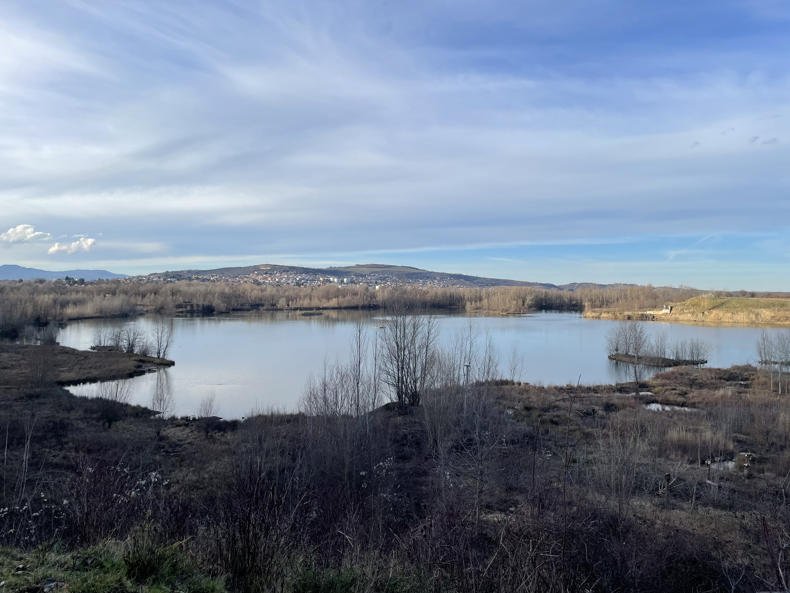
À la base nous avions prévu d'aller marcher autour du Lac Pavin puis nous nous sommes rendus compte que l'endroit était à quasiment une heure de route pour
un tour de 50 minutes (2,7 kilomètres), on s'est dit que faire deux heures de route pour si peu de temps sur place ça ne valait pas la peine. Mais, on garde cette idée dans un coin de notre tête
& nous pensons sûrement y aller un dimanche dès le matin avec une pique-nique & quelques occupations (livres, jeux de société transportables facilement... un peu comme on fait en été au Parc Lecoq).
Sur les conseils de ma maman (qui rappelons-le vit tout de même en Loire-Atlantique), nous avons trouvé un sentier qui avait l'air sympa dans l'Écoparc du Val d'Allier. Je vous mets ici la plaquette avec les différentes
boucles possibles si cela vous intéresse : PDF plaquette Val d'Allier. Nous avons fait la boucle balisée rouge : SENTIER DES ÉTANGS. Nous avons donc pris la voiture
pour une petite durée de 30 minutes & nous sommes arrivés sur les lieux, dans la commune de Pérignat-sur-Allier (63800).
Je vous mets le petit résumé de la plaquette juste ici & je vous donnerai mon avis sur cette mini-randonnée juste après.
À travers ce sentier, voyagez entre les éléments : la terre sur laquelle nous marchons qui vous mènera jusqu’aux marches du Château de Bellerive, l’air dans lequel
nous contemplons les oiseaux tournoyer, et l’eau où se reflètent les volcans d’Auvergne. L’écopôle est riche de 5 étangs et de plusieurs observatoires qui permettent d’admirer la faune et la flore qui
peuplent le site.
Alors pour une reprise — même si on avait fait le tour du Lac d'Aydat à l'automne 2025 — cétait très sympa, le cadre était magnifique & à la fin nous avons même pu voir des hérons.
Ce n'était pas le sentier que j'avais prévu je pensais faire le balisage jaune : LE SENTIER DE L'ALLIER, mais on ne s'est pas garés au bon endroit pour la commencer (après pour notre défense l'adresse
de démarrage n'était pas très claire). Le tour était très rapide, on a dû mettre 45 minutes, le sentier est plutôt accessible même s'il y a des marches à un endroit, sinon c'est plutôt plat & très agréable
de s'y promener. Si vous n'avez pas beaucoup de temps mais une envie d'aller marcher dans la nature, je vous conseille cette balade. Il y a des observatoires plusieurs fois sur le chemin — accessibles aux plus petits — & des
panneaux explicatifs sur la faune & la flore du lieu (que nous n'avons évidemment pas lu — mais ils sont disponibles sur le site Internet). C'est pas si mal indiqué — m'enfin j'aurais quand même galéré sans mon copain — mais j'ai adoré
de petit moment de déconnexion. À refaire & cette fois avec le balisage jaune !